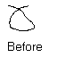
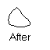

The Morphometry application is used to acquire and gather morphological parameters from the gray-level images.
Contours
Program deals with object contours, which are used for gathering information. Most usual way is to draw
the contour upon the image. It's possible to draw lines and draw "freehand" curves. Once the left mouse button is pressed over
the image, the "freehand" curve is drawn, and when released, the line mode is turned on - the marquee
thin line shows where line will be plotted. To stop drawing, press Esc or right mouse button.
Any file operation aborts drawing session also.
The figure drawn in one session called contour.
Undo
There are provided three of undo commands. As far as mouse movement is recorded and set of straight lines,
the first undo, "Undo drawing", erases last line drawn.
Second step is "Group undo", which erases the whole contour. Both of these operation are irreversible,
so third step, "Undo dialog" bring an dialog that masters drawings in more flexible way.
Command "Clear all drwaings" clear all contours, respectively.
Objects and background
Program is capable of collecting information of two different kinds of contours, namely objects and backgrounds. Their difference is only when calculations take place, in visual representaions they differs only in the color drawn. Default object color is green, background - yellow. It could be changed in Preferences, Appearance bookmark.
Before program calculates data, it has to validate the contours drawn in some way. This is accomplished using image-processign algorithm, that leaves only closed contours. This function activated either by "Edit/Validate contours" command or implicitly when closing and image.
 
The contour in picures above is an example of the algorithm.
As shown from above, to quickly get rid of the unneeded closed contour, it's enough to break it. For that purpose used third "pen", "Remove", which default color is white. All that drawn with "Remove" pen, applied to the image before the validation, so giving handy tool for corrections.
To switch to another pen, use "Edit/Object sets" menu selection. To the same purpose used the color rectangle between scrollbars, which, when clicked, changes it's color and current object set.
Contours are saved in .xml file. If needed to use contours that were drawn for another file, use "File/Import contours" command.
Contours recognition
"Edit/Recognintion setup" brings up the dialog that facilitates the automatic recognintion of the contours. It consists of five numberic fields, three partial preview buttons, "apply" and "restore" buttons.
"Apply" command applies chain of image processing algorithms on the current image, with purpose of extracting contours automatically.
First algorithm, union find, quanitzes 256 levels of gray into less, and its threshold given toggles whether the pixel belongs to some area or not. For example, if we have pixels with brighthess 105,110,115 and 120, and threshold is 10, pixels with brightness 105 and 110 will transform into area with average brigthness between 105 and 110, and will not include pixels with brightness below or above. The result of tteh algorighm shown by first preview button.
Second algorithm is binary threshold, which turns pixels below threshold to black, and above to white. Compound preview of these two algorithms could be seen by pressing secong preview button.
Third algorithm finds areas with minimal and maximal areas given ( in pixels), that could be contoured by line with width equal to "edge size" amount. It's preview button provides black and white image which conturs will be added to object set, when "apply" button pressed. If you see black or white image, that means no contours were found with given settings.
Point anchors
"Toggle point - drawings" command toggles between line plotting and point anchoring modes. It's possible to set points on every image, but if the points are set on the very first image in the series, then their location will be indicated by cross ( red by default) on every image in the continuous series.
The supplementary data is strored into filename with extension xml, which stands for "eXtended Markup Language" and allows in this case storage of different contour characteristics. By default, no calculations ( except contour validation) is taken on image closure, but it's possible ( see "Edit/Properties/Calculations") tell the program to calculate certain parameters after image is processed. These calculations are turned off by default because they require significanmt time to run. But once calculated, some morphological parameters are stored into .xml file along with contours.
Advanced object information
The program can collect more information about the objects, but since it requires quite a lot time to compute, these features are turned off by default. The "Calculation" page in preferences dialog contains settings of these calculations. The following topics controls the program behavior when the .xml file is written on disk.
Calculate brigthness
If on, the summary brightnesses and the brightness histogram are calculated for
each object. For the backgrounds, however, histogram is not calculated.
The calculation takes significant time and depends on number of objects.
Equalize brightness
Can onle be on if "Calculate brightness" is on also. Before the brightess
calculations are performed, the image is subject to equalization procedure,
used to make the background of the scene equally illuminated. The calculation
time is very large, but it's not dependant of objects amount.
Convex hull derived parameters
If on, perform calculation of set of parameters for every object, which are:
for object: width, length, length/width, and breadth; for convex: area, width, perimeter, form factor,
xcentroid, ycentroid, fxcentroid, fycentroid, object length/convex width, and spreading index.
calculation time is small and depends of number of objects. Cannot be turned off while
"Process index/domain" switch is on.
Number of rotations
The topic is under construction
Process index/domain
Calculates the area of the holes for every objects. Calculation time: insignificant.
Significance level for holes,%
Holes, whose area is less than specified amount ( in percents) are not treated in statistic caulations.
This switch does not apply to the program behavior when it is saving .xml file, it is used
for statistic calulations.
Batch processing
The program doesn't write any files and starts no calculations unless contours were changes. It will be laborous task if needed to recalculate parameters on the whole series, in case they are not present in the .xml files to that series, consequently loading, drawing, undoing and saving data. Instead, "Recalculate series" command subsequently loads, and saves images, and saves the recalculated data.
Statistics
The program is also capable of calculating the statistics information, getting the data from sets of .xml files. The "Calculate statistics" command brings the dialog, that allows select set of .xml files. After files were selected, the calulation process is then started and it's results are shown in a separate window.
These result could be copies to the system clipboard by using "Copy" command, or saved to files as different reports using "Export/Summary" and "Export/Experimental data" commands. Summary, as expected, is more brief and contains only averaged statistics.
Special statistics window keys:
Holding Shift key reveals brightness of a pixel under the mouse pointer.
It's possible to change line widths and line colors when drawing a contour ("Edit/Preferences/Appearance").
Toolbar includes two extra icons - "Toggle points/contours" and "Calculate statistics".
To calculate statistics there's no need to load an image.